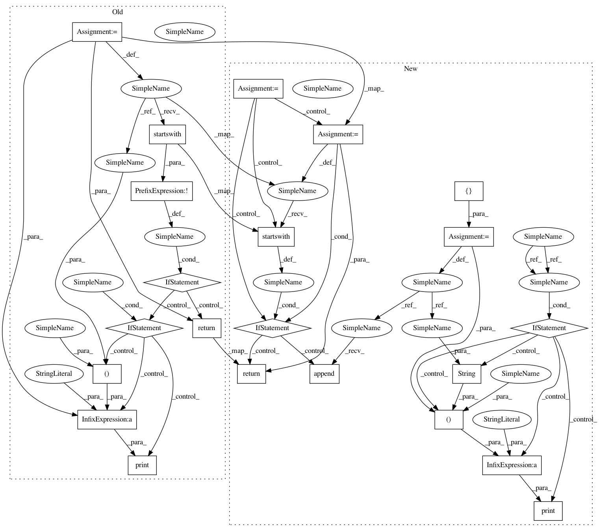

f0697e182f4ddb4bbbf853af9328ad61e4ecef02,pyemma/_version.py,,versions_from_parentdir,#Any#Any#Any#,103
Before Change
Source tarballs conventionally unpack into a directory that includes
both the project name and a version string.
dirname = os.path.basename(root)
if not dirname.startswith(parentdir_prefix):
if verbose:
print("guessing rootdir is "%s", but "%s" doesn"t start with "
"prefix "%s"" % (root, dirname, parentdir_prefix))
raise NotThisMethod("rootdir doesn"t start with parentdir_prefix")
return {"version": dirname[len(parentdir_prefix):],
"full-revisionid": None,
"dirty": False, "error": None}
@register_vcs_handler("git", "get_keywords")
def git_get_keywords(versionfile_abs):
After Change
the project name and a version string. We will also support searching up
two directory levels for an appropriately named parent directory
rootdirs = []
for i in range(3):
dirname = os.path.basename(root)
if dirname.startswith(parentdir_prefix):
return {"version": dirname[len(parentdir_prefix):],
"full-revisionid": None,
"dirty": False, "error": None, "date": None}
else:
rootdirs.append(root)
root = os.path.dirname(root) // up a level
if verbose:
print("Tried directories %s but none started with prefix %s" %
(str(rootdirs), parentdir_prefix))
raise NotThisMethod("rootdir doesn"t start with parentdir_prefix")
@register_vcs_handler("git", "get_keywords")
In pattern: SUPERPATTERN
Frequency: 3
Non-data size: 22
Instances
Project Name: markovmodel/PyEMMA
Commit Name: f0697e182f4ddb4bbbf853af9328ad61e4ecef02
Time: 2017-11-06
Author: m.scherer@fu-berlin.de
File Name: pyemma/_version.py
Class Name:
Method Name: versions_from_parentdir
Project Name: bokeh/bokeh
Commit Name: e9527915f88c9495017543a344766189d7412c51
Time: 2017-01-11
Author: azpujps@gmail.com
File Name: versioneer.py
Class Name:
Method Name: versions_from_parentdir
Project Name: has2k1/plotnine
Commit Name: 76a3a0f60c1f837ed75e5783b49c241490920edd
Time: 2017-01-28
Author: has2k1@gmail.com
File Name: plotnine/_version.py
Class Name:
Method Name: versions_from_parentdir